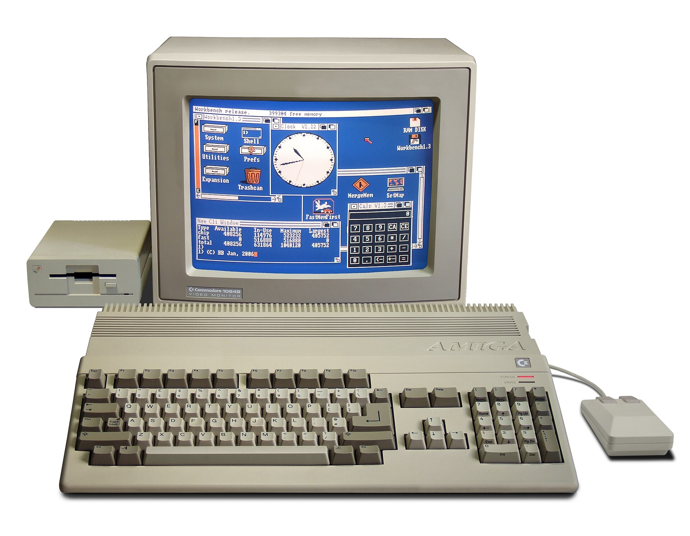
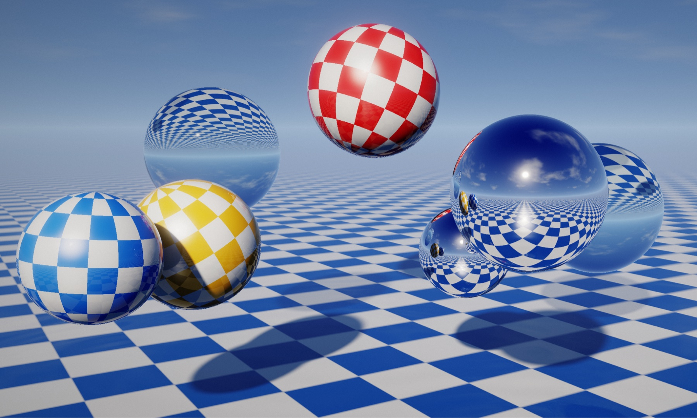
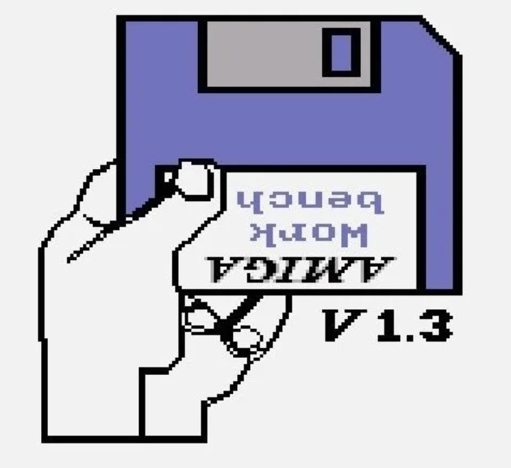

Ev bilgisayarlarının altın çağında büyüdüyseniz, ışıl ışıl parlayan bir CRT monitörün karşısına oturup Commodore Amiga 500'ü ilk kez açtığınız anki o hissi muhtemelen bugün bile olduğu gibi hatırlıyorsunuzdur.

Amiga 1987'de 7 MHz'lik Motorola 68000 işlemcisi ve yarım megabayt belleğiyle geldiğinde, insana sıradan bir donanım yükseltmesi gibi gelmiyordu. Sonsuz bir evrenin anahtarları elinize tutuşturulmuş gibiydi. Kasanın içinde, neredeyse efsanevi adlar taşıyan, bu makine için özel tasarlanmış üç yonga vardı. Copper, elektron ışını ekranı yukarıdan aşağı tararken renk yazmaçlarını anında yeniden yazan minicik bir yardımcı işlemciydi. Blitter, grafik belleğindeki blokları ana işlemcinin asla yetişemeyeceği bir hızla oradan oraya taşıyordu. Paula ise yatak odalarında müzik yapan koca bir kuşağa dört kanallı, 8 bit stereo ses armağan etti.
O mütevazı silikondan efsanevi demoscene doğdu: Avrupa'da ve ötesinde kodcuların, piksel sanatçılarının ve tracker müzisyenlerinin kurduğu, son derece yaratıcı bir altkültür. Bu insanlar, donanımı mühendislerinin bile mümkün görmediği sınırların çok ötesine zorlamak için birbirleriyle yarışıyordu. Yaptıkları demolar sıradan teknik benchmark'lar değildi; dijital sanat eserleriydi. İmkânsız görünen 3D animasyonlar, raster çubukları, görüntüyle senkronize akan müzikler... Hepsi tek bir şeyi söylemek için yapılmıştı: "Bakın, bu makineye neler yaptırabiliyoruz."
Bu büyünün hiçbiri bedava değildi. Elle yazılan assembly kodu, tek tek sayılan işlemci döngüleri ve koca bir uzman ekibinin aylarca süren uykusuz geceleri gerekiyordu. Ama çocukken kısıtlamalara kafa yormazdınız. Ekrana bakar, her gün bir sonraki adımda ne yapacağınızı düşünürken içiniz hayranlıkla dolardı.
Dün gece, onca yıl sonra, aynı his beni yeniden yakaladı.
Tek Prompt ve Nefes Kesen Oran
Yaratıcı kodlamanın ne hızla ilerlediğini görünce Claude Opus'la iddiasız bir deney yapmaya karar verdim. Öncü bir yapay zekâ modelinden 1980'lerde ve 90'larda yatak odalarında kod yazan gençlerin ruhunu yakalamasını istersem ne olacağını merak ediyordum.
Ne mimari diyagram verdim ne teknik şartname; haftalarca plan da yapmadım. Bütün prompt'um tek bir cümleydi:
"Klasik Amiga oyunlarına, demolarına ve müziklerine saygı duruşunda bulunan ve onları ancak modern bir PC'yle yapılabilecek bir seviyeye taşıyan bir mega demo yapabilir misin?"
Birkaç kısa netleştirme sorusunun ardından ortaya Beyond the Copper çıktı: adını o klasik Amiga yardımcı işlemcisinden alan, çok bölümlü, geniş soluklu bir görsel-işitsel prodüksiyon. Doğrudan tarayıcıda çalışıyor, müziğini kendisi sentezliyor ve klasik bir mega demonun ruhunu taşıdığı ilk bakışta belli oluyor.

Beyond the Copper: Modern bir “Amiga” megademosu
Arkadaşım Bilgem grup sohbetimizde açılış sahnesini izlediğini, kalanını da oturup ayrıntılı izlemeyi düşündüğünü yazınca beklentisini hemen biraz aşağı çekmem gerekti: "Çok bir şey bekleme. Sadece benim katkımın ne kadar az olduğunu düşününce etkileyici."
Beni asıl etkileyen de buydu. Nefesimi kesen, demonun kusursuz olması değildi; zaten değildi de. Asıl mesele orandı. Benim katkım mümkün olan en alt sınıra yakındı: bir tutam nostalji, tek cümlelik bir niyet ve birkaç küçük yönlendirme. Eskiden aylar süren zorlu teknik emeğin karşılığı olan her şey ise kendiliğinden halloluvermişti.
Ertesi sabah kendimi arkadaşlarıma şunu yazarken buldum: Yeni Amiga'sı gelmiş bir çocuk gibiyim. Olasılıklar sonsuz, potansiyel sınırsız!
Fraktallar ve Maestrolar
Ama bu yeni bolluğun bir pürüzü var ve bu pürüz çok şey anlatıyor.
Beyond the Copper gözlerimin önünde akarken komik bir huy dikkatimi çekti: Bir grafik projesinde kendi içgüdülerine bırakıldığında Opus'ta her yere fraktal çizmek için neredeyse karşı konulmaz bir istek var. Bir yapay zekâdan asgari yönlendirmeyle bir saygı duruşu isterseniz karşınıza yetkin ama ortalama bir saygı duruşu çıkar: herkesin beklediği matematiksel desenler ve görsel klişeler; tertemiz işlenmiş ama dozu kaçırılmış.
Çıktı üretmekle harika bir iş çıkarmak artık aynı şey değil.
Yapay zekâ shader'ları yazabilir, ses sentezini kurabilir, göz açıp kapayıncaya kadar bin farklı varyasyon üretebilir. Ama 1989'da disket yüklediğine dair kişisel anıları yok. Zevki, ölçüsü, kalp atışı yok. Karşımızdaki, çukurda sessizce oturan dünya çapında bir orkestra: Bugüne kadar yazılmış her notayı çalabiliyor ve bir şef bekliyor.
Sıradan bir izleyicinin elinde bu orkestra fraktal çalar. Ama gerçek bir maestronun elinde aynı araçtan bir başyapıt doğabilir. Maestro dediğim, hangi efektin atılacağını, hangi geçişin yerini hak ettiğini, hangi melodinin sahneyi taşıdığını ve beşinci revizyonu ne zaman isteyeceğini bilen kişi.
Eski beceriler yok olmadı; bir soyutlama katmanı yukarı çıktı. Bir zamanlar işlemci döngülerini sayan yaratıcı, bugün küratörlük, yönetmenlik ve vizyonla uğraşıyor. Araç herkes için tabanı yükseltirken, işini gerçekten önemseyenler için tavanı da tamamen kaldırıyor.
Merakın Bedeli Sıfıra Yaklaşınca
Yapay zekâdan genellikle kurumsal verimliliğin kuru diliyle söz ederiz: Kodu ne kadar hızlı yayına alabiliriz? Kaç destek talebini kapatabiliriz? Ne kadar gelir yaratabiliriz?
Bu sorular önemli ama daha derindeki kültürel depremi ıskalıyor. Yapay zekâ, merakın maliyetini dibe çekiyor.
İnsanlık tarihinin neredeyse tamamında, bir fikrin aklınıza gelmesiyle işe yarayıp yaramadığını öğrenmeniz arasındaki mesafeyi dik ve acımasız duvarlar korudu. Kafanızda bir oyun canlandırabilir, bir senfoni duyabilir ya da gündelik işlerinizdeki can sıkıcı bir sorunu çözecek bir yazılım hayal edebilirdiniz. Ama o zanaatta ustalaşmak için yıllarınız ya da bu ustalığı zaten edinmiş bir ekibi tutacak sermayeniz yoksa, fikirlerin çoğu o boşlukta sessizce ölüp giderdi. Kötü oldukları için değil, onları denemek fazla pahalı olduğu için.
Bir fikrin çalışan ilk prototipi neredeyse bedavaya gelince, hayal gücüyle gerçeklik arasındaki geri bildirim döngüsü de anında kapanıyor. Denemek ucuzlayınca birden yeniden oyunbaz olabiliyoruz. Tuhaf yan yollara sapabiliyoruz. Her öğleden sonrayı bir iş gerekçesiyle savunmak zorunda kalmadan bir şeyler yapabiliyoruz.
Bir projenin ilk sürümü nadiren varış noktasıdır; daha çok olasılıklarla yapılan bir sohbettir. Kaba bir taslak yaparsınız, ekranda kıpırdadığını görürsünüz ve asıl ne yapmak istediğinizi ancak o zaman keşfedersiniz. Sırf başlayabilmek için ustalık şartı ortadan kalkınca, dün seyirci olan milyonlarca insan bugün kâşif olarak sahaya çıkabiliyor.
Önümüzdeki Yirmi Yıl Kimin?
Her teknoloji dalgasında insanlar kaçınılmaz olarak aynı kaygılı soruyu sorar: "Hangi mesleği seçmeliyim? Önümüzdeki 5, 10 ya da 20 yılda hangi işler aranacak, hangileri para kazandıracak?"
1987'deki o Amiga'dan bugün masamdaki prompt penceresine uzanan yola bakınca, cevabın sonunda berraklaştığını düşünüyorum: Gelecek, geleceği yaratanlarındır.
Hepimizin günde sekiz ile on iki saat arası verimli zamanı var ve önümüzdeki on yılların belirleyici ayrımı, değişmeyen iş unvanınız olmayacak. Bu saatlerde ne üretmeyi seçtiğiniz olacak.
Öne geçenler, giderek artan ölçüde, yapay zekâyı bilinçli olarak üç kişisel alanda yönlendiren insanlar olacak:
- Derin ve Size Özgü Bilgi: Herkes bir sohbet botundan genel geçer bir özet isteyebilir. Önümüzdeki on yılın kâşifleri ise yapay zekâyı yorulmak bilmeyen bir araştırma ortağı olarak kullanıp yabancı oldukları alanlara açılacak, son derece kişisel bilgi birikimleri oluşturacak. Daha iyi ve daha zor takip soruları sorarak geliştirdiğiniz içgörüler size ait olacak; hiçbir pasif tüketicinin erişemeyeceği bir derinlikte.
- Kişiye Özel Yazılım: Yazılım artık yalnızca büyük şirketlerin kitlesel pazarlar için ürettiği endüstriyel bir ürün değil. Bir öğretmen salı günkü dersi için etkileşimli bir fizik simülasyonu yapabilir; bir doktor, bir tasarımcı ya da bir girişimci, kendi hayatında ve işinde tam da takıldığı noktaları çözecek yazılımları hızla hazırlayabilir.
- Kişisel Bir Araç Cephaneliği: En etkili üretenler tek tek projelerin ötesine geçip yapay zekâyla kendi aletlerini, iş akışlarını ve araç setlerini şekillendiriyor. Başka kimsenin elinde olmayan kişisel çözümler kuruyorlar. Yaptıkları her araç bir sonrakini hayal etmeyi kolaylaştırdığı için de kaldıraçları katlanarak büyüyor.
Teknik engeller yıkılınca ayakta yalnızca insani engeller kalır. İnisiyatif alanlar, yani derin bilgi, özgün yazılım ve kendine özel araç setleri üretenler, önümüzdeki dünyayı şekillendirecek. Ne yapacaklarının kendilerine söylenmesini bekleyenler ise geride kalacak.
Disketi Tutan El
1987'de bir Amiga 500'ü içinde program yokken açtığınızda sizi sade ve unutulmaz bir görüntü karşılardı: pikselli beyaz bir ekranda, mavi bir Kickstart disketi tutan bir el. Bir şey takmanızı ve makineye can vermenizi sessizce bekliyordu.

Modern bir yapay zekâ arayüzünde yanıp sönen imleç de tıpatıp aynı şekilde bekliyor.
Yaratıcı ve düşünsel işlerin giderek genişleyen bir bölümünde, alıştığımız o rahat bahanelerin hepsi buharlaşıp gitti. Önce altı aylık bir kurs daha bitirmeniz gerekmiyor. Tohum yatırım almayı ya da kusursuz mühendislik ekibini kurmayı beklemeniz de gerekmiyor. "Ya şöyle olsaydı?" sorusuyla çalışan bir cevap arasındaki mesafe hiç bu kadar kısa olmamıştı.
Oyun alanı açık. Orkestra çukurda akordunu yapmış, batonunuzun ilk vuruşunu bekliyor. Geriye kalan ve gerçekten önemli olan tek sınırlar sizin inisiyatifiniz, zevkiniz ve başlama cesaretiniz.
Peki, bugün ne yaratacaksınız?
Yorumlar